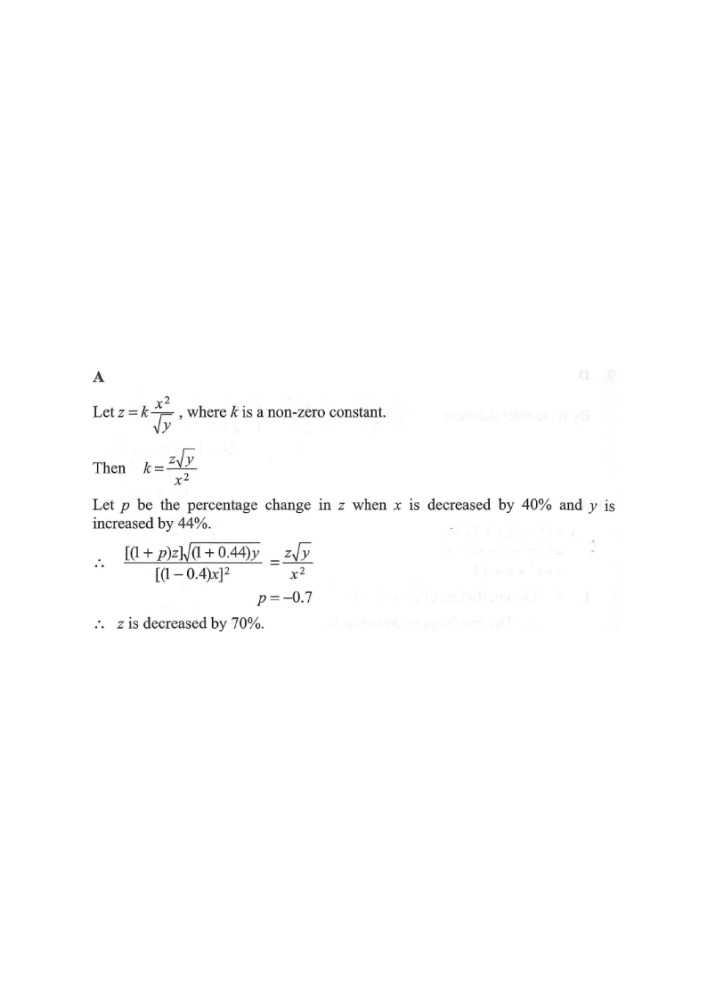

Step 1 — the given relation $z=k\dfrac{x^2}{\sqrt{y}}$
It is given that $z$ varies directly as the square of $x$ and inversely as the square root of $y$. If $x$ is decreased by $40\%$ and $y$ is increased by $44\%$, then $z$

“$z$ varies directly as the square of $x$ and inversely as the square root of $y$” gives
$$z = k\,\frac{x^2}{\sqrt{y}}, \qquad k \neq 0 \text{ is a constant.}$$
Hint: “directly as the square of $x$” → $x^2$ in the numerator;
“inversely as $\sqrt{y}$” → $\sqrt{y}$ in the denominator.
$x$ is decreased by $40\%$:
new $x = (1-0.4)x = 0.6x$.
$y$ is increased by $44\%$:
new $y = (1+0.44)y = 1.44y$.
Hint: a $p\%$ change means multiplying by $(1+p\%)$ — a decrease uses a factor below $1$,
an increase a factor above $1$.
If $z$ changes by $p$,
the new value is $(1+p)z$. Substituting into $z=\dfrac{kx^2}{\sqrt{y}}$:
$$\frac{(1+p)z}{\sqrt[\ ]{(1+0.44)\,y}} \;=\; \frac{k\,[(1-0.4)x]^{2}}{\sqrt{(1+0.44)y}}$$
Hint: the constant $k$ is unchanged,
so compare the new ratio with the old one.
Dividing the new relation by the original $z = \dfrac{kx^2}{\sqrt{y}}$:
$$\frac{1+p}{\sqrt{1.44}} \;=\; \frac{(0.6)^2}{1} \;=\; 0.36$$
Since $\sqrt{1.44}=1.2$,
$$1+p = 0.36 \times 1.2 = 0.432 \;\Rightarrow\; p = -0.568$$
Hint: the whole problem reduces to the product of the two scale factors: $(0.6)^2 \div \sqrt{1.44}$.
$$p \times 100\% = -56.8\% \approx -70\%$$
A negative percentage change means $z$ decreases.
Hint: the answer choices give $70\%$,
so round the exact value $-56.8\%$ to the nearest given option.
Question. It is given that \(z\) varies directly as the square of \(x\) and inversely as the square root of \(y\). If \(x\) is increased by \(20\%\) and \(y\) is increased by \(44\%\), find the percentage change in \(z\).